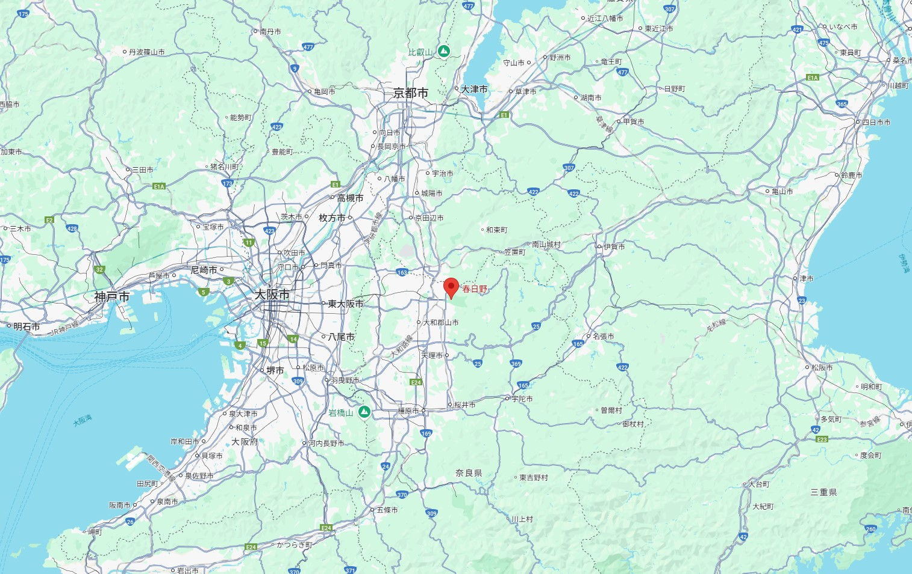

くらべこし 振り分け髪も 肩過ぎぬ 君ならずして たれかあぐべき
第一次玩ヨスガノソラ时，我就对“春日野”这个姓氏产生了浓厚的兴趣，「春日野」（かすがの）在日语中算一个古姓，在近代并不常见，全日本仅有130人左右。

「春日野」实际是一个地名，位于如今奈良的春日大社附近，若草山一带，仍沿用了“春日野”这一称呼，而古语中「春日野」则泛指奈良山下的平原。在古代和歌中不乏对此地的描述，例如：
あまの原、ふりさけ见れば、春日なる、三笠の山に、いでし月かも——安倍仲麻吕
就是这样一个被和歌诗人所讴歌的地方，成为了本作男女主角的姓氏，我认为这不是巧合，这或许是游戏开发人员从日本古典作品「伊勢物語」中得到的的一种文学浪漫。 可曾记得「伊勢物語·初冠」中的开头句子:
「昔、男が初冠（元服）して、奈良の都、春日の里に所領がある関係で狩りに出かけた。 その里にとても優美な姉妹が住んでいた。 この男は垣根越しに覗き見てしまった。」
开头便点出了地点，正是奈良春日野。接着便引出了和诗：
「春日野の若紫の摺衣 しのぶの乱れ限り知られず」 （春日野兮信夫染 窥得卿貌心乱迷 若此紫纹兮心难敛）
对「伊勢物語」有过了解便知道，「伊」为女子，「势」代指男人，本书各话的内容主要以男女恋爱为中心，包括亲子爱、主仆爱、友情、社交生活等，此外更有恣肆的兄妹情。小说男主原业平是日本历史上最有名的美男子，也是一个倚才放浪好色风流的男子，他的父亲是平城天皇的皇子，母亲是桓武天皇的皇女伊登内亲王。小说中男主和圣女的故事可以说是古史里兄妹剧情的鼻祖。近代日语中「妹背」 一词便出自于此，此词既指“夫妇”，也指“兄妹”，「背」在日文中本来就有丈夫的意思何来演化为同辈的亲切称呼，如「我が背」等。
对此，我认为脚本人员之所选定「春日野」作为主角姓氏，可能是对古籍的一种致敬，毕竟骨科剧情在奈良时代的日本屡见不鲜（许多和歌对此都有描述）。而从「伊勢物語」中乞灵，正证明了在古日语中重要的地位。也正是这样充满了文学性的浪漫，再加上静谧的乡村环境设定，才让这部作品如此的清新，令人咀嚼。
写在最后，笔者今年高三，在忙碌中抽出空余时间写下了一些自己的看法，毕竟日语水平有限，有差错也在所难免，如有纰漏烦请各位斧正。